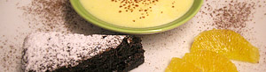

Kürbiscrème (nach Oskar Marti)
6 von 6300 gramm geraffelter kürbis in einem esslöffel butter, 100 g zucker und saft von 2 orangen langsam dünsten bis ein püree entsteht. durch ein sieb streichen und abkühlen lassen. 150 g weisse schokolade schmelzen und darunter ziehen. ein ei und ein
eigelb schaumig rühren und ebenfalls dazugeben, abkühlen lassen. 2,5 dl rahm schlagen und sachte darunter heben. mind. 4 std. kühlstellen.
